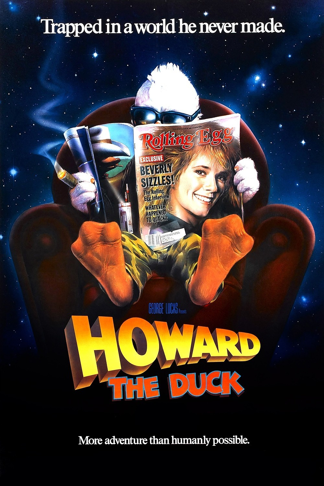
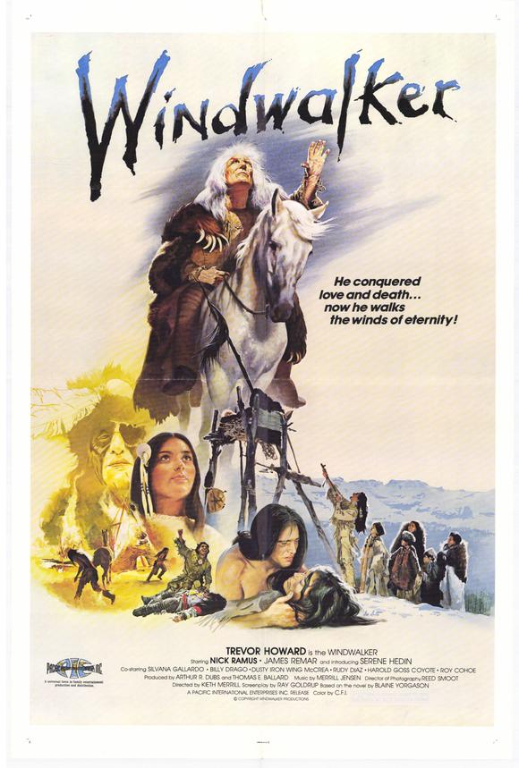
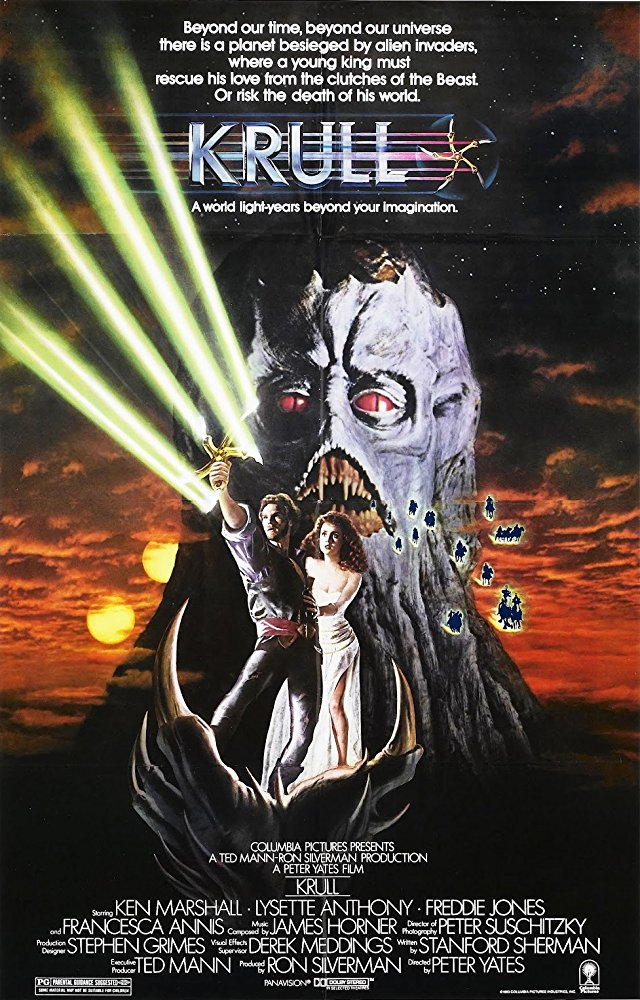

Favorite Movies
Below are a few of my favorites.

Howard burst on to the sceen with unrefined crassness that typified the 80's. Seemingly cute and lovable he was no Donald Duck. He smoked, drank, had a penchant for trouble and a thing for Lea Thompson (like most young men did).

Windwalker told a moving tale of love and loss then reunion under the umbrela of pre-Colombian Native American life. This father comes back from the dead to help his family find peace.

Krull caputures the mind with the heroic efforts of a prince rescuing his bride. Together with a few loyal friends and a physics defying spinning blade, he'll surely triumph over the alien invaders from another world.